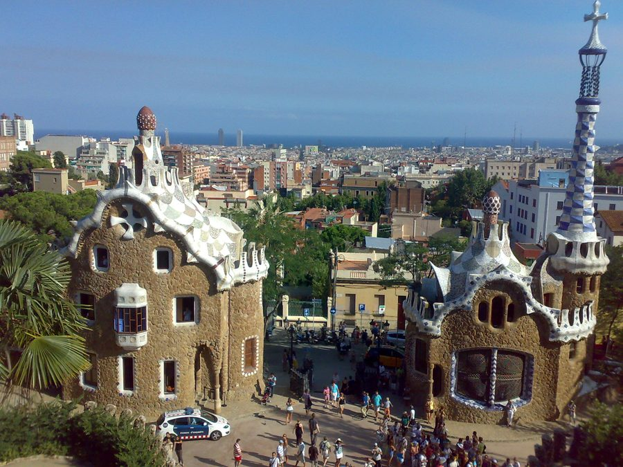
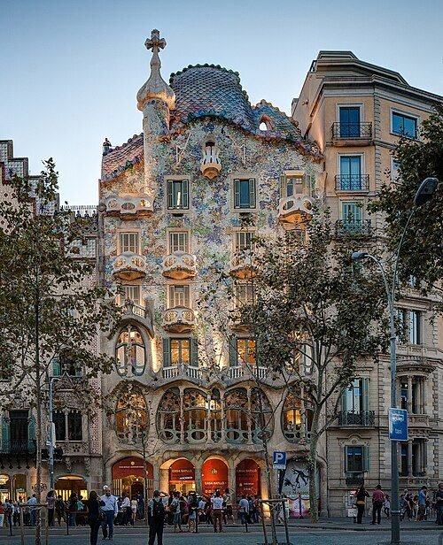
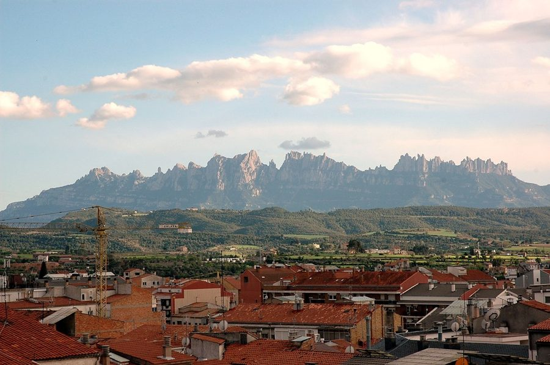
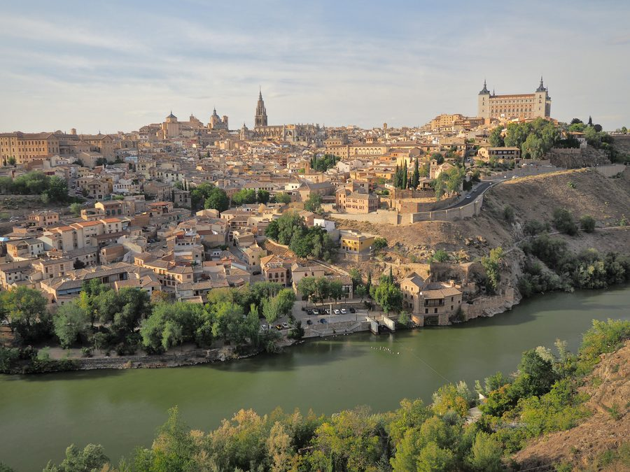
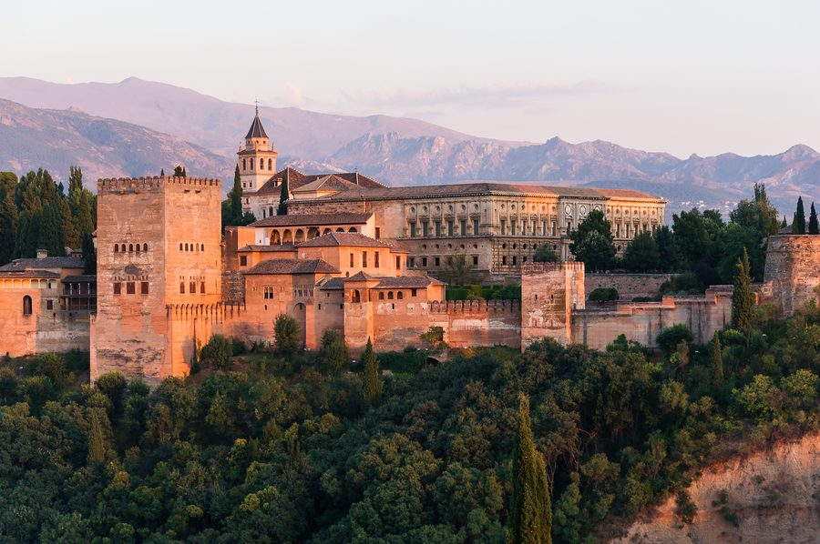
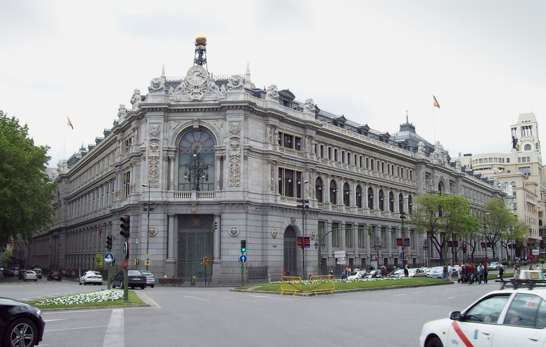

한눈에 일정
| Day | 도시 | 핵심 |
|---|
| 1 | 바르셀로나 | 도착·고딕지구 야경 |
| 2 | 바르셀로나 | ⛪ 사그라다 파밀리아·카사 바트요/밀라 |
| 3 | 바르셀로나 | 구엘 공원·벙커 전망·바르셀로네타 |
| 4 | 몬세라트 | 수도원 당일치기·근교 |
| 5 | 마드리드 | AVE 고속열차·프라도 미술관 |
| 6 | 톨레도 | 중세도시 당일치기 |
| 7 | 그라나다 | 🕌 알람브라 궁전 |
| 8 | 귀국 | 말라가/마드리드 출국 |
🗺 여행 경로
바르셀로나(4박) → 마드리드(2박) → 그라나다(1박). 도시 간은 AVE 고속열차.
바르셀로나 · 가우디
몬세라트 · 근교
마드리드 · 예술
톨레도 · 중세
그라나다 · 알람브라
바르셀로나 ↔ 마드리드: AVE 2시간 30분 · 마드리드 ↔ 그라나다: AVE 3시간 15분.
좌석은 Renfe에서 60일 전 예매 시 최대 60% 할인(Promo).
⛪ 가우디 특집
이번 여행의 심장. 안토니 가우디(1852–1926)의 걸작 7개는 유네스코 세계유산.
사그라다 파밀리아 · Barcelona
사그라다 파밀리아 (Sagrada Família)
1882년 착공, 140여 년째 건축 중. 2026년은 가우디 서거 100주년으로
중앙 예수탑(172.5m)이 완공되어 세계 최고(最高) 성당이 될 예정 — 지금 가면 역사적 순간.
🎟 예약 필수
현장 구매 거의 불가.
공식 사이트에서 2~3주 전 날짜·시간 지정 예매.
기본 €26 · 타워 포함 €36
🌅 빛의 마법
스테인드글라스가 최고인 시간:
오전(동쪽·푸른빛) 또는 일몰 무렵(서쪽·붉은빛).
추천: 09:00 입장
🗼 탑 오르기
엘리베이터로 탄생/수난 파사드 탑.
고소공포 주의, 내려올 땐 좁은 나선계단.
Nativity 파사드 추천

🏞 구엘 공원
트렌카디스(깨진 타일 모자이크)
도롱뇽과 물결 벤치. 도시 전망.
Monumental Zone €10 · 예약제

🏠 카사 바트요
뼈·용 비늘 모티프의 환상적 파사드.
해골 발코니.
€35 · 파세지 데 그라시아
🌊 카사 밀라 (라 페드레라)
물결치는 석조 외벽,
투구 쓴 전사 굴뚝의 옥상.
€28 · 야간 조명쇼도 有
⛪ 콜로니아 구엘 성당
가우디 구조실험의 원형.
근교라 한적. 시간 되면.
€9 · 근교 FGC 열차
⚠️ 가우디 명소는 전부 사전 예약제. 성수기(4~6·9~10월)엔 1~2주 전 매진.
사그라다 파밀리아 + 카사 바트요 + 구엘 공원은 여행 확정 즉시 예매하세요.
📅 일자별 상세
DAY 1바르셀로나 도착 · 고딕지구
- 오후엘프라트 공항 도착공항버스 Aerobús 또는 R2 기차로 시내 35분
- 저녁고딕 지구(Barri Gòtic) 산책대성당·왕의 광장, 좁은 중세 골목의 야경
- 밤첫 타파스El Xampanyet 또는 Bar del Pla에서 여행 개시 건배 🍷
체크인시차적응가볍게
DAY 2가우디의 날 ①
- 09:00⛪ 사그라다 파밀리아2시간. 오전 푸른 스테인드글라스가 백미. 오디오가이드 필수
- 12:00파세지 데 그라시아카사 바트요 → 카사 밀라, 모더니즘 건축 거리 도보
- 14:00점심 · 파에야7 Portes(전통) 또는 근처 메르카트에서
- 저녁카사 밀라 야간 조명쇼"La Pedrera Night Experience" 옥상 라이트&재즈
사그라다 파밀리아모더니즘
DAY 3구엘 공원 · 바다
- 09:30구엘 공원모자이크 도롱뇽·물결 벤치. 오전 입장이 사람 적음
- 12:30벙커 델 카르멜 전망대360° 바르셀로나 파노라마 (무료·숨은 명소)
- 15:00보케리아 시장 · 람블라스하몽·과일주스·해산물
- 저녁바르셀로네타 해변지중해 석양, 해변 xiringuito에서 씨푸드
구엘 공원전망지중해
DAY 4몬세라트 당일치기

- 오전몬세라트 수도원기암괴석 위 수도원. 톱니열차/케이블카로 오름
- 낮검은 성모상·소년 합창단13:00 Escolania 합창(월~금)
- 오후산 정상 하이킹Sant Jeroni 전망, 카탈루냐 평원 조망
- 저녁바르셀로나 복귀 · 마지막 밤플라멩코 or 벙커 야경
근교자연
DAY 5마드리드로 · 예술
- 08:30AVE 고속열차Sants역 → 마드리드 Atocha, 2시간 30분
- 12:00프라도 미술관벨라스케스 '시녀들', 고야 '검은 그림'
- 오후레티로 공원 · 솔 광장크리스탈 궁전, 보트타기
- 저녁산 미겔 시장미식 타파스 투어
AVE프라도
DAY 6톨레도 당일치기

- 오전톨레도(AVE 33분)3문화(기독·이슬람·유대)가 공존한 중세 요새도시
- 낮대성당·엘 그레코'오르가스 백작의 매장'
- 오후미라도르 전망 · 마사판타호강 굽이 전망, 아몬드 과자
중세세계유산
DAY 7그라나다 · 알람브라

- 오전AVE로 그라나다마드리드 → 그라나다 3시간 15분
- 14:00🕌 알람브라 궁전나스르 궁·헤네랄리페 정원. 시간지정 예약 필수
- 저녁알바이신 & 미라도르 산 니콜라스알람브라 야경 뷰포인트, 플라멩코 동굴(Sacromonte)
알람브라이슬람 건축
DAY 8귀국
- 오전여유 산책 · 기념품올리브오일·사프란·투론
- 낮말라가/마드리드 공항 이동 → 출국역산: 국제선 3시간 전 도착
체크아웃
🥘 미식
스페인은 지역마다 색이 다르다. 꼭 먹어볼 것들.
| 메뉴 | 설명 | 어디서 |
|---|
| 파에야 | 발렌시아식 쌀 요리. 해산물/혼합 | 바르셀로나 해변가 |
| 타파스·핀초스 | 작은 안주 여러 개. 바 순례 | 마드리드·산세바스티안 |
| 하몽 이베리코 | 도토리 먹인 흑돼지 생햄 | 어디든 · 시장 |
| 추로스 콘 초콜라테 | 진한 핫초코에 찍는 추로스 | 마드리드 San Ginés |
| 가스파초 | 차가운 토마토 수프(여름) | 안달루시아 |
| 상그리아·베르무트 | 낮술의 정석 🍷 | 바르셀로나 베르무테리아 |
🍽 스페인 점심은 14~16시, 저녁은 21시 이후. 관광객 식당 외엔 그 사이 브레이크. 배고프면 타파스 바로!
🚄 교통
| 구간 | 수단 | 시간/비용 |
|---|
| 인천 → 바르셀로나 | 항공(경유) | 14~16h · 왕복 120~180만 |
| 공항 → 시내 | Aerobús / R2 | 35분 · €5.9 / €4.9 |
| 바르셀로나 → 마드리드 | AVE 고속열차 | 2h30 · €30~90(조기) |
| 마드리드 → 톨레도 | AVE | 33분 · €14 |
| 마드리드 → 그라나다 | AVE | 3h15 · €30~70 |
| 시내 이동 | 메트로 T-casual | 10회권 €12.15 |
🎫 AVE는
Renfe에서
60일 전 오픈, Promo/Promo+ 좌석이 가장 쌈. 여권명 그대로 입력.
💬 기본 스페인어
화장실 어디?
¿Dónde está el baño?
돈데 에스따 엘 바뇨
영어 되세요?
¿Habla inglés?
아블라 잉글레스
🎭 종이의 집 · La Casa de Papel
스페인 하면 떠오르는 넷플릭스 명작. OST 벨라 차오(Bella Ciao)와 함께 촬영지를 밟아보자.
🎭
달리 가면 + 빨간 점프수트
저항의 상징. 마드리드 기념품샵에서 가면을 구할 수 있어요.

Banco de España, 마드리드 — 시즌3~4 강도 무대
| 촬영지 | 어디 / 팁 |
|---|
| 조폐국 (강도 무대) | 실제 외관은 마드리드 CSIC(국립연구위원회) 건물 · 메트로 República Argentina |
| 스페인 은행 (시즌3~4) | 시벨레스 광장 Banco de España 외관 (내부는 세트) |
| 교수의 아지트 | 일부 장면 톨레도 인근 — Day 6 톨레도와 연계 |
✊ 우하단 벨라 차오 버튼을 누르면 그 선율이 흐릅니다. “Una mattina mi son svegliato…”
💰 예산 (1인 · 7박8일)
| 항목 | 내역 | 예상 |
|---|
| 항공 | 인천↔바르셀로나 경유 왕복 | ₩1,400,000 |
| 숙소 | 3~4성 7박 (1인 기준 트윈 분담) | ₩700,000 |
| 기차(AVE) | 바르셀로나·마드리드·그라나다·톨레도 | ₩180,000 |
| 입장료 | 사그라다·구엘·카사·알람브라·프라도 | ₩200,000 |
| 식비 | 하루 ₩50,000 × 8 | ₩400,000 |
| 기타 | 교통·기념품·비상 | ₩120,000 |
| 합계 | ≈ ₩3,000,000 |
💡 항공 특가·조기 기차 예매·게스트하우스 활용 시 ₩250만까지 절감 가능.
✨ 꿀팁 & 준비물
가기 전 예약 체크
- 사그라다 파밀리아 (2~3주 전, 타워 포함)
- 알람브라 나스르 궁 (시간지정, 조기 매진 1순위)
- 구엘 공원 · 카사 바트요 · 프라도
- AVE 고속열차 (60일 전 Promo)
현지 팁
- 소매치기 주의 — 람블라스·메트로·해변. 크로스백 앞으로
- 시에스타로 14~17시 상점 브레이크 많음
- 물은 사서 마시기, 팁은 잔돈 정도
- 유심/eSIM 미리 (Orange·Vodafone)
- 더위 대비 — 여름은 40℃, 봄·가을(4~6·9~10월)이 최적